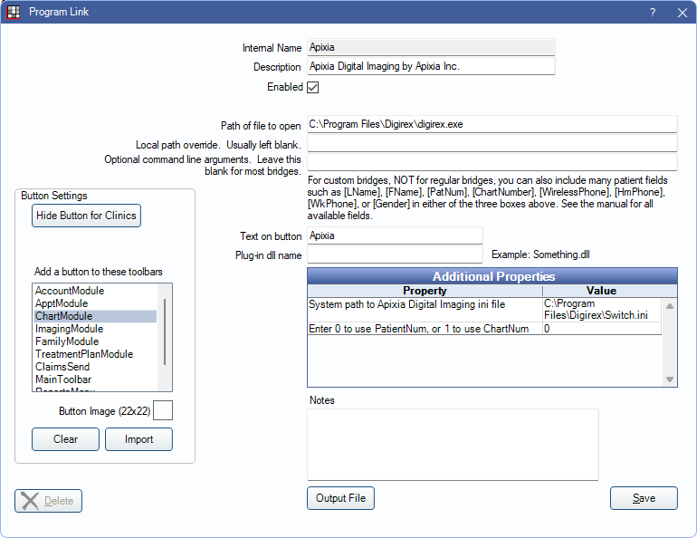

Apixia Bridge
In the Main Menu, click Setup, Program Links. Double-click on Apixia Digital Imaging by Apixia Inc.
Apixia is a digital imaging software. Website: http://www.apixia.net/html/front/bin/home.phtml.
To enable the bridge:
- Check the Enabled box.
- Verify the Path of file to open.
- Double-click on a row in Additional Properties to change settings.
- Verify the System path to Apixia Digital Imaging ini file value. The Switch.ini must be in the same folder as the digirex.exe executable.
- Use the PatNum (enter 0) or ChartNum (enter 1) as the patient ID.
- Set up a clickable bridge button.
- Under Add a button to these toolbars, highlight where to display the button.
- Enter the Text on button.
- (Optional) Import an image to show on the button (22 x 22 pixels).
- If using clinics, click Hide Button for Clinics. Select which clinics the button should display on.
- Click Save.
Technical Data
Apixia uses a Switch.ini file to identify selected patients. Open Dental sends the selected patient's birthdate, chart number (if selected), dentist ID (Open Dental provider abbreviation), digirex password (digirex), gender, name, and patient number to the Switch.ini file. The Apixia application loads the patient in the Switch.ini file.
Example File:
[Patient]
ID=17
Gender=Male
First=Derrick
Last=Robinson
Year=2008
Month=2
Day=24
[Dentist]
ID=doc1
Password=digirex
Apixia requires user IDs and passwords (these are not the Open Dental usernames and passwords). Use the DigirexServer application to add users for Apixia. The Dr.ID must match the provider abbreviation (uses patient's primary provider) in Open Dental and all passwords must be digirex. If the user ID and password are not set up correctly, a message displays and Apixia freezes.